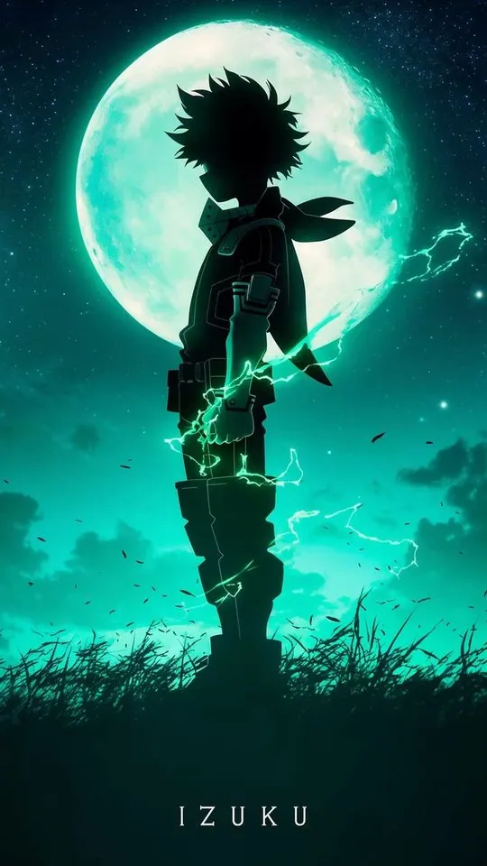
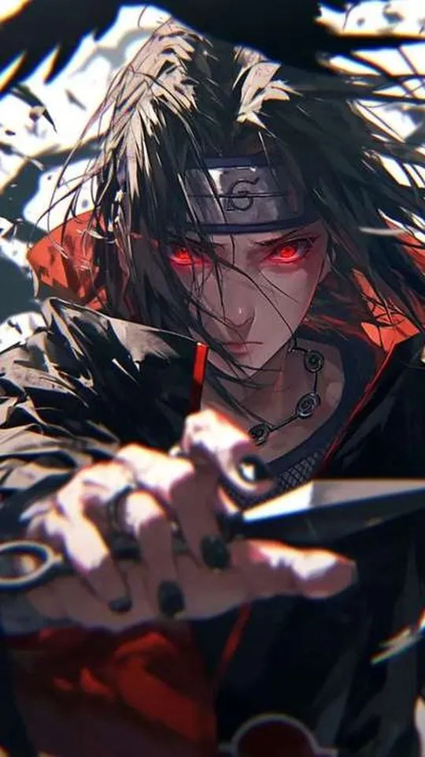
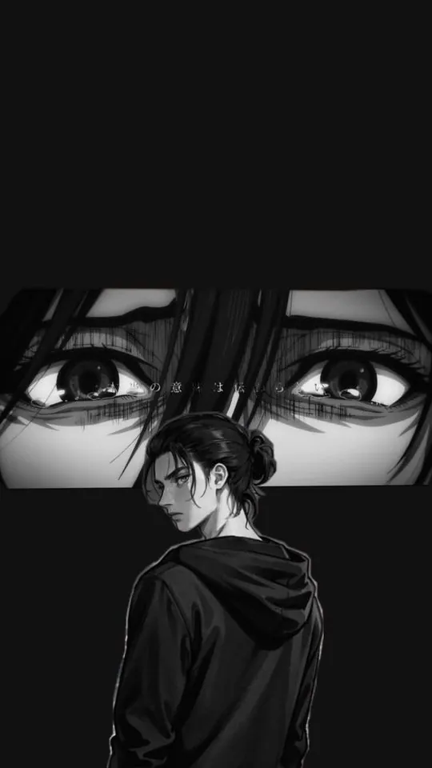
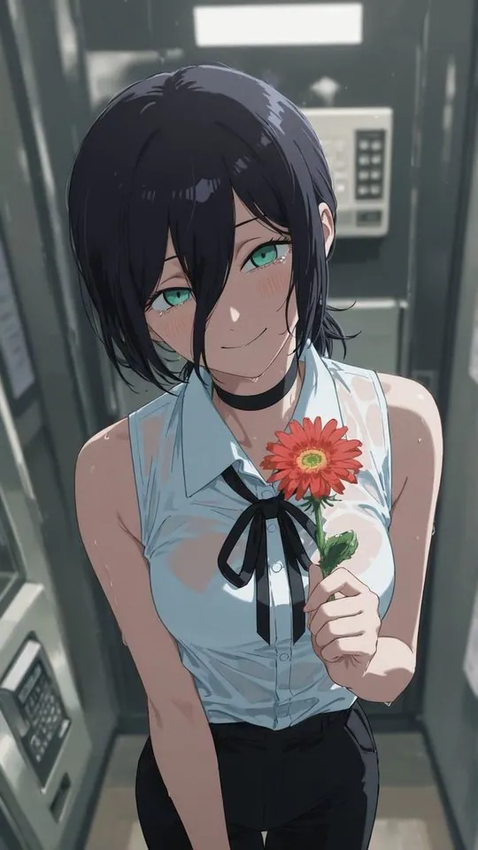
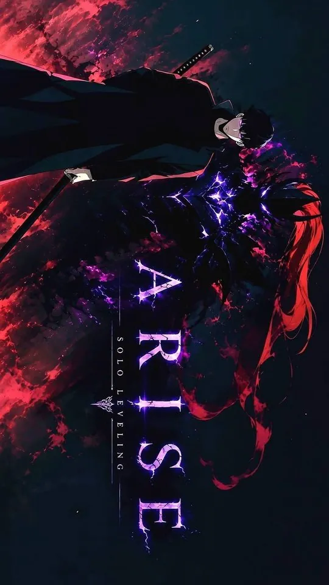
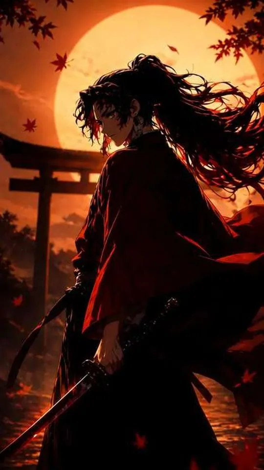
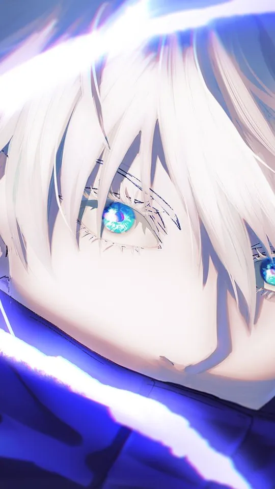

Anime
Anime wallpapers & guides
Character-by-character wallpaper guides for the anime people actually search for — what each character's art brings to a portrait phone screen, and how to crop it so nothing important gets cut off.
All anime articles
12 posts
As a Reincarnated Aristocrat - Season 1 Review: Every Episode
A slow-burn political isekai that rewards patience. Every one of the twelve episodes, the community scores, and an honest verdict on why the opening three episodes cost it a higher rating.

As a Reincarnated Aristocrat - Season 2 Review: War and Strategy
Season 2 fixes the pacing and turns the premise into a real war. Fort Vakmakro, Castle Samkh, Castle Rolto and the duel the whole series was building towards.

As a Reincarnated Aristocrat - Season 3 Review (Airing Now)
The Canarre arc has begun and the studio has changed. What has aired so far, the full broadcast schedule, and why the production handover is invisible on screen.
As a Reincarnated Aristocrat - Complete Guide to Season 1-3
One page for the whole series: full recap, timeline, character list, season-by-season comparison and where to start if you are jumping in now.

My Hero Academia Wallpapers: From Deku to All Might
My Hero Academia is one of the boldest-looking anime on television, and that boldness is exactly what makes it work as a phone wallpaper. This guide looks…

Naruto vs Boruto: Which Characters Make Better Wallpapers?
Naruto and Boruto are set in the same world but drawn in two very different visual languages, and that difference shows up the moment you put them side by…

One Piece Wallpapers: Ranking the Straw Hats by Art Quality
One Piece has been running long enough that its artwork has passed through several distinct looks, and that range is exactly what makes it such a rich…

Attack on Titan Wallpapers: The Most Iconic Scenes and How to Use Them
Attack on Titan looks different from most anime wallpapers, and that difference is exactly what makes it work. This guide covers the most recognisable…

Chainsaw Man Wallpapers: Denji, Pochita and the Art That Works Best
Chainsaw Man has one of the boldest colour identities in modern anime, and that makes it both a gift and a trap for wallpapers. This guide covers Denji,…

Solo Leveling Wallpapers: Sung Jin-Woo's Best Art, Ranked
Solo Leveling is one of the few series whose art was designed to look best on a screen, which makes it a natural fit for phone wallpapers. This guide…

Demon Slayer Wallpapers: Every Hashira Ranked for Your Lock Screen
Demon Slayer is a show built on colour, and that makes it unusually good material for a phone wallpaper. This guide ranks all nine Hashira, plus Tanjiro…

Jujutsu Kaisen Wallpapers: The Best Characters for Your Phone
A phone wallpaper has to survive being glanced at dozens of times a day, so it needs to read clearly at a small size and in a hurry. This guide works…